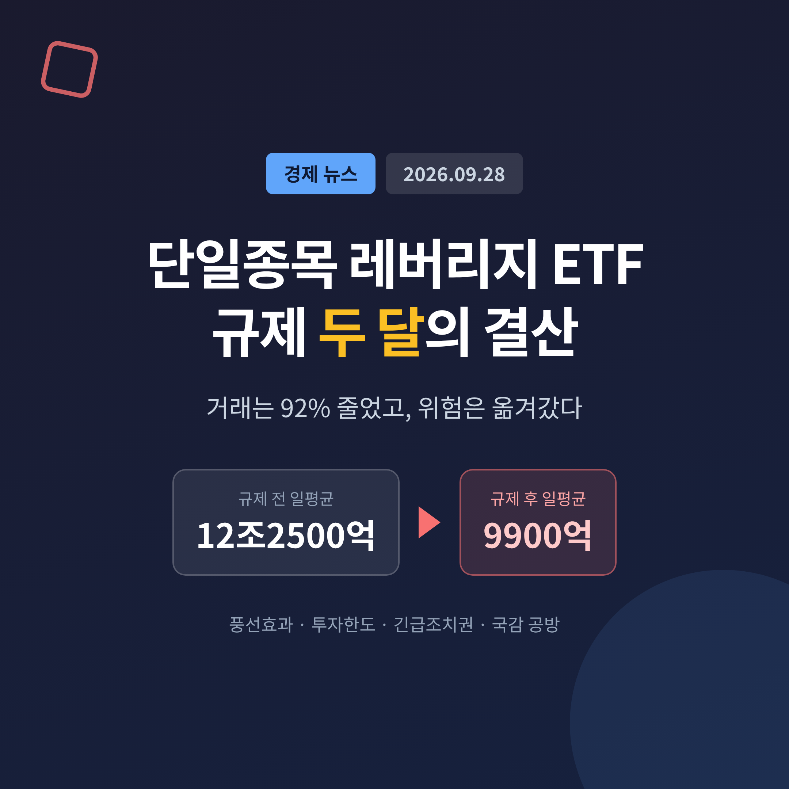
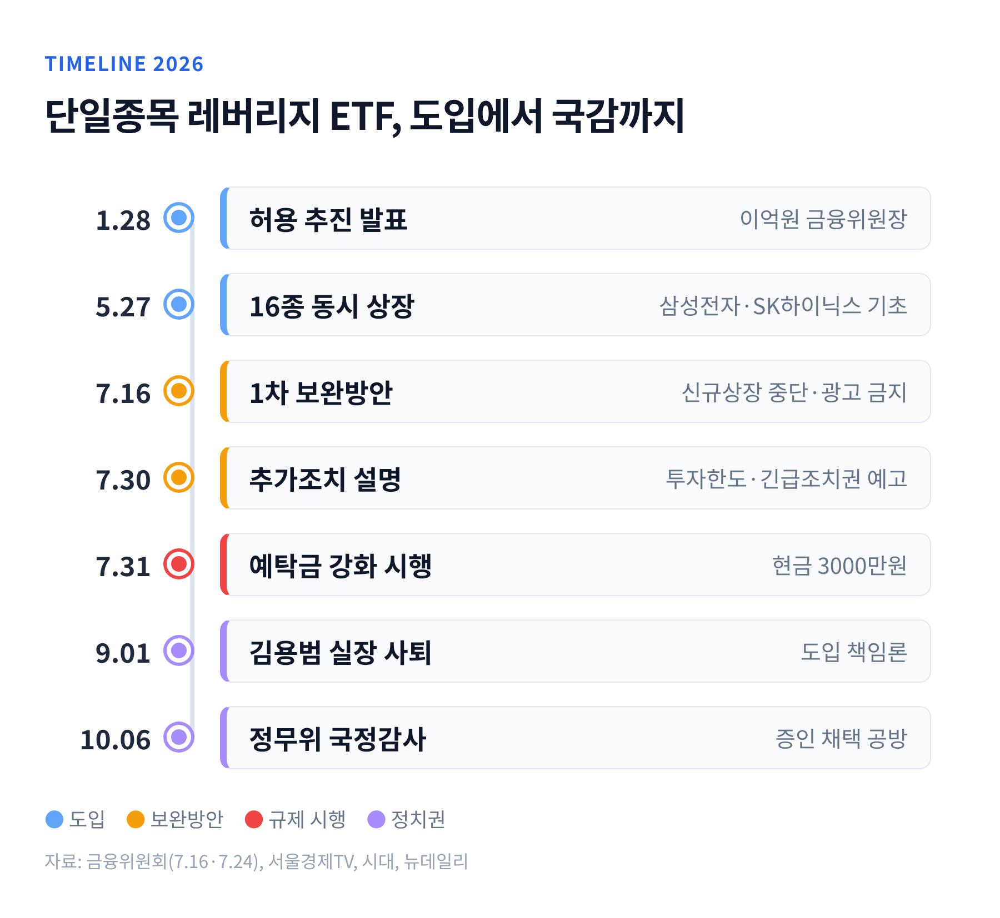
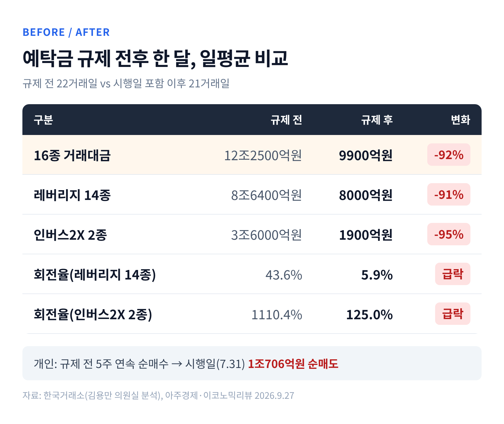
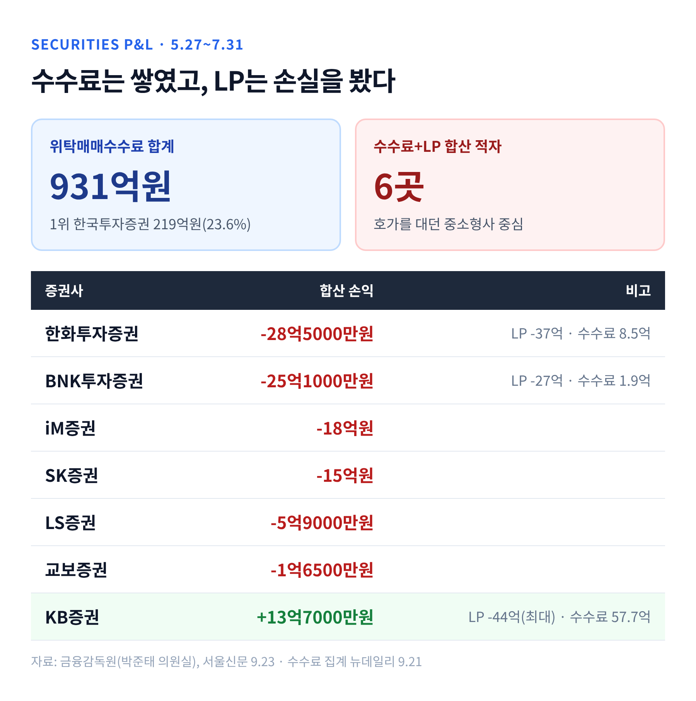
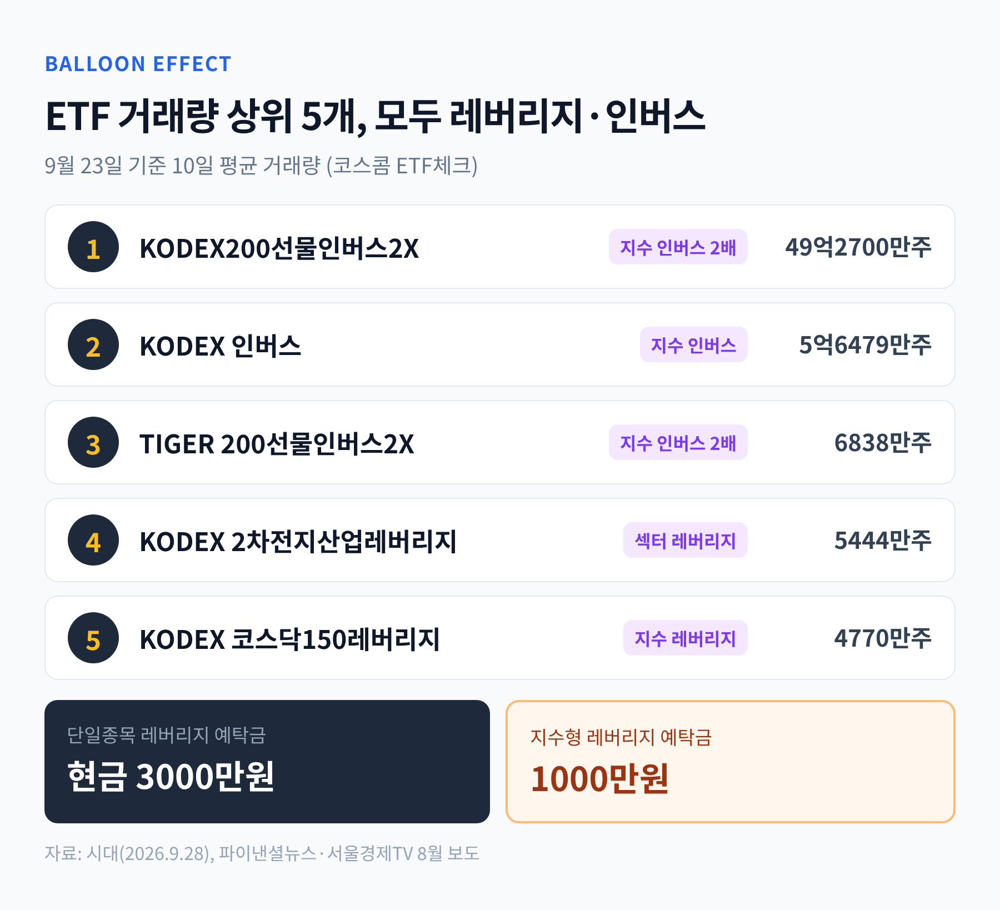
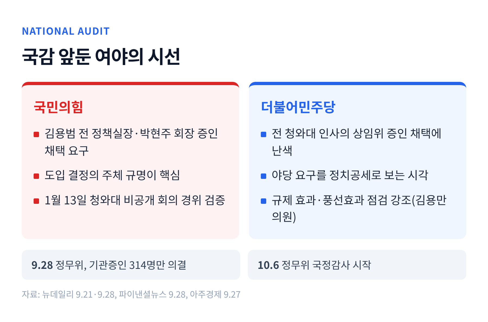

이번 글에서는 삼성전자·SK하이닉스 단일종목 레버리지 ETF 규제가 시행된 지 두 달이 지난 지금의 상황을 정리해 보겠습니다. 거래는 확실히 줄었습니다. 다만 규제가 막은 것과 남긴 것은 따로 따져볼 필요가 있습니다.
출발점은 2026년 1월 28일입니다. 이억원 금융위원장은 이날 단일종목 레버리지 ETF 허용 추진을 밝혔습니다.
명분은 '국내외 규제 비대칭 해소'였습니다. 홍콩에는 이미 삼성전자·SK하이닉스를 기초로 한 레버리지 상품이 상장돼 있었고, 국내 투자자들이 보호장치가 약한 해외 상품으로 직접 나가고 있었습니다. 금융위는 같은 수요를 국내 규율 안으로 끌어들이겠다고 설명했습니다.
5월 27일, 16개 상품이 한꺼번에 상장됐습니다. 반응은 뜨거웠습니다. 금융위 집계로 16종 시가총액은 상장일 4.4조원에서 7월 15일 11.9조원으로 불었습니다. 하루 거래대금은 6월 24일 19조4429억원까지 치솟았습니다.
같은 기간 기초자산의 변동성도 커졌습니다. 5월 말부터 7월 초까지 연율화 변동성은 SK하이닉스 113%, 삼성전자 96%에 달했습니다. 코스피에서 두 종목이 차지하는 시가총액 비중은 지난해 말 34%에서 7월 중순 52%까지 올라갔습니다.
7월 들어 흐름이 뒤집혔습니다. 7월 한 달 동안 삼성전자는 18%, SK하이닉스는 30% 하락했습니다. 일간 수익률의 두 배를 따라가는 구조상 손실도 두 배로 불어났습니다.
당국은 7월 16일 보완방안을 내놨습니다. 신규 상장을 잠정 중단하고 광고와 이벤트성 마케팅을 즉시 금지했습니다. 이어 7월 31일부터는 기본예탁금을 대용증권 포함 1000만원에서 현금만 3000만원으로 올렸습니다. 당초 8월 초·중순으로 잡혀 있던 일정을 앞당긴 것입니다.
세부 장치도 촘촘해졌습니다. 주식을 팔아 생긴 돈은 결제일(T+2)이 돼야 예탁금으로 인정됩니다. 사전교육은 2시간에서 3시간으로 늘었고, 증권사의 괴리율 관리 기준도 3%에서 2%로 강화됐습니다.

숫자로 보면 효과는 분명합니다.
국회 정무위원회 김용만 더불어민주당 의원실이 한국거래소 자료를 분석했습니다. 규제 전 22거래일과 규제 후 21거래일을 비교한 결과입니다.
거래가 얼마나 자주 손바뀜됐는지를 보여주는 회전율은 더 극적입니다. 레버리지 14종은 43.6%에서 5.9%로 떨어졌습니다. 인버스2X 2종은 1110.4%에서 125.0%로 내려앉았습니다.
일시적 충격도 아니었습니다. 레버리지 14종의 거래대금은 규제 직전 6조4400억원에서 시행 첫 주 8700억원으로 줄었고, 8월 31일에는 5300억원까지 낮아졌습니다.
개인의 방향도 바뀌었습니다. 규제 전 5주 내내 순매수였던 개인은 시행 당일 1조706억원을 순매도했습니다. 이후에도 한 주를 빼고는 매주 '팔자'였습니다.
예전엔 하루 10조원 넘게 오가던 시장이었습니다. 지금은 하루 수천억원이 오가는 조용한 시장이 됐습니다.

규제는 앞으로의 과열을 막는 장치입니다. 이미 생긴 손실까지 되돌리지는 못합니다.
출시 100일 무렵인 9월 4일 기준, 16개 상품의 상장 이후 평균 수익률은 -57.61%였습니다. 일부는 -68%까지 떨어졌습니다. 레버리지와 인버스 모두 마이너스였다는 점이 눈에 띕니다. 방향을 맞혀도 등락이 거듭되면 원금이 깎이는 레버리지 상품의 구조가 드러난 셈입니다.
개인 전체 손실 규모는 아직 공식 집계가 없습니다. 씨티글로벌마켓증권은 한국 자산을 기초로 한 레버리지 상품 전반의 개인 손실을 약 56조3000억원으로 추정했습니다. 해외 상장 상품까지 포함한 추정치인 만큼, 수십조원대라는 규모 정도로 받아들이는 편이 안전합니다.
증권사의 성적표는 엇갈렸습니다. 5월 27일부터 7월 31일까지 증권사들이 이 상품 거래로 거둔 위탁매매수수료는 931억원이었습니다. 한국투자증권 한 곳이 219억원, 전체의 23.6%를 가져갔습니다.
반대편에는 손실을 본 곳도 있습니다. 유동성공급자(LP)로 호가를 대던 증권사들입니다. 금융감독원 자료에 따르면 수수료와 LP 손익을 합쳐 적자를 낸 곳이 6곳이었습니다. 한화투자증권이 28억5000만원, BNK투자증권이 25억1000만원 적자였고 iM증권·SK증권·LS증권·교보증권이 뒤를 이었습니다.
KB증권은 LP에서 44억원을 잃었지만 수수료 57억7000만원으로 메웠습니다. 결국 고객 거래가 많은 대형사는 남고, 호가만 대던 중소형사는 손해를 본 구조입니다. 전문 헤지 시스템을 갖춘 LP마저 손실을 입었다는 사실은, 이 변동성이 개인이 감당하기에 얼마나 컸는지를 보여줍니다.

9월 28일 보도된 코스콤 ETF체크 자료는 다른 그림을 보여줍니다.
9월 23일 기준, 국내 상장 ETF의 10일 평균 거래량 상위 5개가 모두 레버리지·인버스 상품이었습니다.
단일종목 상품의 문턱은 높아졌습니다. 하지만 코스피200·코스닥150 같은 지수형, 반도체·2차전지 같은 섹터형 상품은 여전히 기본예탁금 1000만원이면 살 수 있습니다. 한 방향에 크게 거는 수요가 사라진 것이 아니라 자리를 옮긴 것입니다.
정현종 한국투자증권 연구원은 반도체 레버리지 ETF 등으로 풍선효과가 나타나고 있다고 봤습니다. 국내 규제만으로 글로벌 투자 수요를 제어하기는 쉽지 않다는 진단도 덧붙였습니다.
거래량을 분석한 김용만 의원도 비슷한 경계를 남겼습니다. 거래가 줄었다는 사실만으로 투자자 보호가 완성됐다고 볼 수는 없다는 것입니다.
지수형 상품은 개별 종목보다 변동성이 낮은 편입니다. 풍선효과가 곧바로 같은 크기의 위험을 뜻하지는 않습니다. 다만 인버스2X처럼 배율이 걸린 상품에 거래가 몰린다는 점은, 투기적 수요의 성격이 크게 달라지지 않았음을 시사합니다.

논란은 시장 밖으로도 번졌습니다. 상품이 어떤 경로로 도입됐는지를 두고 책임 공방이 이어지고 있습니다.
알려진 사실부터 정리하겠습니다. 1월 6일 금융위·금융투자협회·업계 실무진 회의에서 단일종목 2배 레버리지 등 상품 다양화 필요성이 언급된 것으로 보도됐습니다. 1월 13일에는 청와대에서 비공개 '자본시장 매력도 제고 회의'가 열렸습니다. 김용범 당시 정책실장과 금융당국, 주요 증권사·운용사 관계자가 참석한 것으로 전해집니다. 이 회의는 회의록이 없습니다.
금융투자협회는 9월 18일 해명을 냈습니다. 논란이 된 자료는 회의 발언용 참고자료였고, 상품 다양화 필요성은 업계에서 여러 차례 나온 의견을 참고했다는 설명입니다.
김용범 실장은 8월 31일 사의를 표했고, 이튿날 사표가 수리됐습니다. 이재명 대통령은 9월 18일 기자회견에서 해외로 나가던 투자 수요를 국내로 돌리면 외환시장 안정에 도움이 된다는 보고를 받았다고 설명했습니다. 그러면서 "부족함이 있었던 게 사실"이라고 인정했습니다.
국정감사를 앞두고 여야의 입장은 뚜렷하게 갈립니다.
국민의힘은 김용범 전 실장과 박현주 미래에셋그룹 회장을 증인으로 세워야 한다고 요구합니다. 박성훈 의원은 대통령이 말한 결정의 주체를 밝혀야 한다고 했고, 박대출 의원은 김 전 실장이 빠지면 의혹 규명이 부족할 수밖에 없다고 강조했습니다.
더불어민주당은 전 청와대 인사를 개별 상임위 증인으로 부르는 데 난색을 표하고 있습니다. 국민의힘의 요구를 '정치공세'로 규정하는 시각도 있습니다. 한편 같은 당 김용만 의원은 거래 감소 이후의 풍선효과를 점검해야 한다며 정책 효과 쪽에 초점을 맞추고 있습니다.
9월 28일 정무위원회는 기관 증인 314명만 의결했습니다. 김 전 실장 등 일반 증인 채택은 간사 협의 뒤로 미뤄졌습니다. 정무위 국감은 10월 6일 시작합니다.

첫째, 추가 규제의 윤곽입니다. 금융위는 7월 30일 개인별 투자한도를 예고했습니다. 금융투자상품 총투자금액의 20% 이내가 예시로 제시됐지만 확정된 기준은 아닙니다. 과다거래 부담금, 모의거래 의무화도 함께 검토되고 있습니다. 매매수량 단위를 1좌에서 20좌로 늘리는 조치도 남아 있습니다.
둘째, 긴급조치권입니다. 금융위는 긴급 상황에서 법령 개정 없이 시장 안정 조치를 할 수 있도록 자본시장법 개정을 추진합니다. 현재 2배인 배율을 낮추는 방안까지 염두에 두고 있습니다. 홍콩이 7월 24일 도입한 '가변 레버리지' 지침이 참고 사례입니다. 적용 대상이 단일종목 상품에 한정되지 않는다는 점에서, 지수형 상품으로의 풍선효과에도 쓰일 수 있는 도구입니다.
셋째, 해외 유출의 역풍입니다. 국내 문턱을 계속 높이면 수요가 다시 홍콩 상품으로 빠져나갈 수 있다는 우려가 있습니다. 애초 이 상품을 들여온 이유가 바로 그 해외 유출이었습니다. 규제의 강도와 도입 취지 사이의 균형이 다시 시험대에 오른 셈입니다.
넷째, 국정감사입니다. 증인 채택 여부에 따라 공방의 무게가 달라질 것입니다. 다만 도입 경위를 밝히는 일과 투자자 보호 장치를 보완하는 일은 별개의 과제입니다. 두 논의가 뒤섞이면 정작 제도 개선은 뒤로 밀릴 수 있습니다.
정리하면 이렇습니다.
두 달의 규제는 과열을 식히는 데는 분명히 성공했습니다. 하지만 수요는 사라지지 않았고, 이미 난 손실은 그대로 남았습니다. 규제의 성패는 거래대금이 아니라 다음 과열이 어디서 시작되느냐로 판가름 날 것입니다.
"문을 닫는 것과 수요를 다루는 것은 다른 일"입니다.
이번 국감과 추가 입법이 그 차이를 메울 수 있겠느냐고 물으신다면, 저는 풍선의 다른 쪽 끝을 먼저 들여다보는 쪽이 답에 가깝다고 말씀드리겠습니다.